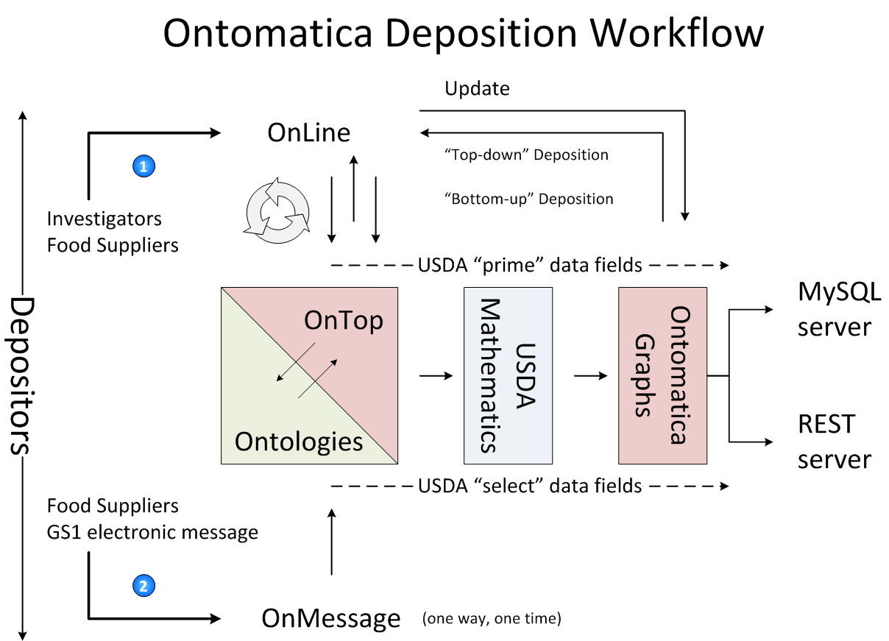

OnLine and OnMessage Deposition¶
Table of Contents¶
Deposition Workflow¶
A depositor registers information via:
OnTop parser interacts with ontologies to properly classify deposit.
USDA select and USDA prime data are complemented with data generated by USDA mathematics.
Ontomatica graphs (representing things or events, and causal relationships between them) are updated.
Data then is stored on MySQL and REST servers.

Harmonization of GS1, GTIN and Vocal Data¶
Explanation; equivalence schema:sameAs.
| GS1 GPC Classes and Bricks | Vocal facet term and facet term code |
|---|---|
| Brick attribute: Classification | Product Type |
| – | [A0361] |
| Family: Fruits; Vegetables; Nuts; Seeds | Fruits; Vegetables; Nuts; Seeds |
| [50100000] | [A0987] |
| Class: Fruit - Prepared; Processed | Fruit - Prepared; Processed |
| [50102000] | [A0988] |
| Brick: Fruit - Prepared; Processed (Perishable) | Fruit - Prepared; Processed (Perishable) |
| [10000205] | [A0990] |
| ~~~ | ~~~ |
| Brick attribute: Formation | Physical State, Shape or Form |
| [20000352] | [E0113] |
| Chopped | Divided into pieces |
| [30000653] | [E0100] |
| Halved | Divided into halves |
| [30001224] | [E0116] |
| Homogenized | Homogenized |
| [30001266] | [H0306] |
| ~~~ | ~~~ |
| Brick attribute: Organic claim | Consumer Group, Dietary Use, Label Claim |
| [20000142] | [P0023] |
| – | Organic food claim or use |
| – | [P0128] |
| No | – |
| [30002960] | – |
| Yes | – |
| [30002654] | – |
| ~~~ | ~~~ |
| Brick attribute: If pitted, stoned | Part of Plant/Fruit |
| [20000109] | [C0167] |
| No | Fruit, peel undetermined, core, pit or seed present |
| [30002960] | [C0163] |
| Yes | Fruit, peel undetermined, core, pit or seed removed |
| [30002654] | [C0213] |
| ~~~ | ~~~ |
| Brick attribute: Cooking process | Preservation Method |
| [20000128] | [J0107] |
| Cooked | Sterilized by heat |
| [30002953] | [J0123] |
| Dried | Dehydrated or dried |
| [30002762] | [J0116] |
| Sugared | Preserved by adding sugar |
| [30002518] | [J0146] |
| ~~~ | ~~~ |
| Brick attribute: Refrigeration claim | Preservation Method |
| [20000153] | [J0107] |
| Can be refrigerated | Preserved by chilling |
| [30000517] | [J0131] |
| Must be refrigerated | – |
| [30000090] | – |
| ~~~ | ~~~ |
| Brick attribute: Type of fruit | Fruit Producing Plant |
| [20000076] 103 possible types of fruits | [B1140] |
| Apples | Apple |
| [30003020] | [B1245] |
Integration of GS1, GTIN and Vocal Data¶
OnMessage enables construction of a comprehensive food record that includes bar code information (GTIN) together with GS1 data (Brick codes), Vocal terms and related data.